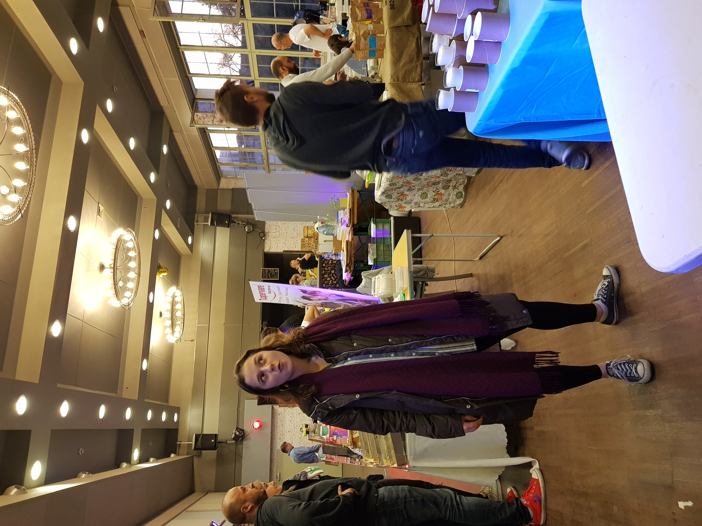
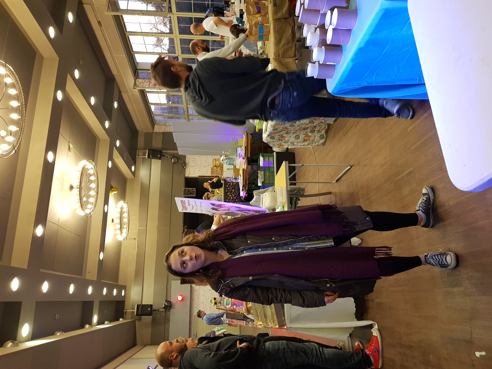

Miałem pomysł na napisanie jeszcze kilku postów. Nigdy jednak na tyle by je faktycznie napisać i wrzucić na stronę (Świetna informacja). Cieszę się, że ty się odnajdujesz w życiu, ale chyba jeszcze bardziej cieszę się, że w końcu zdecydowałaś się mnie nie chować za zamkniętymi drzwiami swojej podświadomości. Ja naprawdę jestem człowiekiem i staram się całe życie być nawet takim dobrym. Chciałem tylko, żebyś mnie chociaż na koniec potraktowała po ludzku. Moim zdaniem nie udało się ale to jest najlepsze co mogłaś dla mnie zrobić! Dziękuję ci za to. Ten post jest dla mnie ważniejszy niż wszystkie poprzednie, ponieważ jest prawdziwą esencją tej strony – prawdziwym i szczerym (z całego mojego złamanego serca) pożegnaniem. Ta strona była po to bym mógł zatrzymać w serduszku wszystko co było dobre i wyrzucić na zawsze z pamięci wszystko inne. Mam nadzieję, że ta piosenka będzie idealnym odzwierciedleniem tego.
Pewnie się zastanawiasz czemu akurat to zdjęcie wrzuciłem na koniec. Nie jest wcale moim ulubionym ani najpiękniejszym mimo, że jak zawsze wyglądałaś na nim przecudnie. Wrzucam je, ponieważ obrazuje nasz cały związek. Nie byliśmy idealnie pod żadnym względem. Ja robiący ci zdjęcie w takim momencie to idealnie przedsatwia. Jednak twój przecudownie miły uśmiech pokazuję też drugą stronę medalu. Spędziliśmy genialne wspólne lata na zabawie. Cieszę się, że byłaś moim kompanem przez te lata. Cieszę się, że miałem z kim porozmawiać kiedy czułem się smutny i z kim mogłem się zabawić kiedy byłem szczęśliwy. Cieszę się, że uprawialiśmy szalony seks jak również tym, że zobaczyliśmy razem kawałek świata. Cieszę się, że byliśmy razem.
Wszystko jednak ma swój koniec i to jest finalnie mój. Zakończenie w moim przypadku trwało prawie tyle co nasze mieszkanie razem ale najwidoczniej tego potrzebowałem. Nasze zakończenia są rozdzielone o co najmniej 18 miesięcy ale to też chyba dość normalne. Życzę ci szczęścia w swoich dalszych podróżach i wytrwania przy tym kim jesteś a właściwie to przy tym kim chciałabyś być. Myślałem, że jestem w stanie mieć cię gdzieś w social mediach ale twoje szczęście jeszcze mnie przerastało :P. Ania, nie jesteś idealna, ponieważ nikt nie jest. Jesteś mimo wszystko świetną osobą wesołą, żywą i (co najważniejsze) przyjazną. Życzę ci byś zawsze była uśmiechnięta i szła przed siebie z nastawieniem, że wszystko możesz bo tak właśnie jest. Finalnie jednak, życzę ci byś nigdy nikogo nie skrzywdziła (jak również nie była skrzywdzona) tak jak ja zostałem skrzywdzony przez ciebie.
Pus Pus
Din för alltid,
Koala


 
